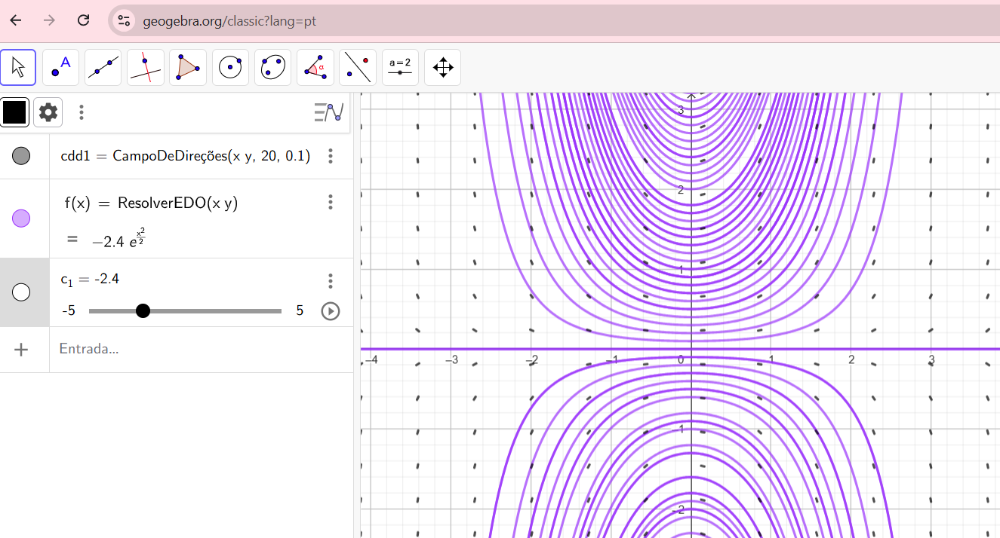

Esboçar campos vetoriais no Geogebra é bem simples!!
Abra o Geogebra Classic no navegador de seu desktop ou instale o aplicativo no seu celular ou tablet. Acesse aqui o site oficial para download.
Também pode instalar no seu desktop o Geogebra Classic, pode escolher o 5 ou o 6. O Geogebra 5 é bem mais completo, mas para esboçar curvas é suficiente o Geogebra 6 que possui uma interface mais parecida ao Geogebra Classic do navegador web.
Na caixa de Entrada escreva os comandos e clique enter. O campo de direções aparecerá na janela de visualização correspondente.
Com o comando CampoDeDireções(f(x,y), Número n, Fator de escala a), o Geogebra esboçará o campo de direções da EDO \(y'=f(x,y)\). O número n tem a ver com o número de inclinações que o Geogebra esboçará e o fator de escala a com o comprimento dos segmentos.
Já para esboçar as curvas integrais, digite o comando ResolverEDO(f(x,y)). O Geogebra criará um botão deslizante para o parâmetro \(C\) e esboçará a curva integral de \(y'=f(x,y)\) para cada \(C\). Detalhe!!! O Geogebra as vezes se engana e confunde gráfico de função com curva integral. Fique antenado!!! Acesse esse conteúdo para entender o erro.
Se, na mesma janela algébrica, você clicar nos três pontinhos do lado do comando Resolver EDO e depois em configurações. Poderá clicar na configuração Exibir Rastro, na aba Básico das configurações. Daí aparecerão todas as curvas integrais, uma para cada valor do parâmetro \(C\). Legal, né?
